open-audiovisual 網頁原生的影音表演框架。
琴鍵、旋鈕、人聲、手勢、手機，都會變成有名字的訊號（signal）。映射（mapping）把訊號接到參數（param），你的世界（world）讀這些參數，變成畫面和聲音。在瀏覽器分頁、投影機、舞台上都一樣。
v0.1 · MIT 授權 · 零建置 · 零相依
01 · 彈奏 這台樂器就是框架本身在跑
點琴鍵或畫面，或按電腦鍵盤 A 到 L，就能彈。
A 到 L 彈奏 · Z／X 換八度 · 拖曳畫面
舞台上的世界是一台擺錘繪圖機（harmonograph），用擺錘把音程畫成圖形的老機器。你彈的每個音，會依音高擺動一支擺錘。和弦分析器讀你按住的音，把協和度經過一條路由 chord/consonance → order 送進世界：三和弦畫出乾淨的圖形，音堆畫出一團糾纏的線。 看這台樂器的原始碼 →
02 · 運作方式
四層，各自分開
一場表演有四個部分：發生了什麼、它代表什麼、世界怎麼反應、結果怎麼離開瀏覽器。open-audiovisual 讓這四層各自分開，換掉其中一層，其他三層照常運作。
-
L1 輸入
“正在發生什麼”
MIDI 琴鍵、麥克風、一個和弦、鏡頭前的一隻手、在空中傾斜的手機。每一種都會變成訊號：一個名字加一個數值，通常在 0 到 1 之間。
pointer/x = 0.50數值來自上面那台樂器 -
L2 映射
“它代表什麼”
路由把訊號接到參數，每一條都能設曲線、範圍和平滑。一顆旋鈕可以同時推三個參數。按下 learn，隨便動一樣東西，線就接好了。
pointer/x → hue smooth 0.25數值來自上面那台樂器 -
L3 世界
“系統怎麼表現”
你的作品。它只讀參數，不碰輸入，用什麼畫都可以：canvas、p5、three.js、WebToe 節點網路。
hue = 14數值來自上面那台樂器 -
L4 輸出
“怎麼離開瀏覽器”
螢幕，還有聲音：頁面裡的樂器、送到硬體和 DAW 的 MIDI、送到 Spat、Reaper、TouchDesigner 或燈光的 OSC。
screen · 60 fps數值來自上面那台樂器
四層之外
- 時間軸 Timeline
- 整場演出的樂譜：參數自動化、場景與 cue。手一抓住控制，樂譜就讓位。
- 控台 Console
- 導演桌：播放控制、推桿、learn、儀表，按 T 進入演出模式。
- 後台監看 Monitor
- 同一個網路裡的手機或筆電都能當後台：時鐘、場景、每個訊號、FPS，舞台畫面斷線時會警示。
- 手機 Phones
- 手機和 iPad 當控制器：傾斜和敲擊感測、琴鍵，還有依世界的參數自動長出來的控制面板。
兩條規則
- 訊號是輸入唯一的通用貨幣。 一顆旋鈕、一隻舉起的手、一個和弦的協和度，在框架裡地位相同，各有名字。所以它們可以混在一起用。
- 世界永遠不知道誰在演奏它。 世界只讀參數。同一個世界，可以由鋼琴家、舞者，或一條自動化曲線來演奏。
這一頁用到的詞
- 訊號 Signal
- 一個有名字的數值，說明正在發生什麼，例如
midi/cc/74、audio/rms。通常在 0 到 1 之間。脈衝訊號（pulse）帶的是事件，例如一個音被按下。 - 參數 Param
- 世界在聽的數值，例如
hue、bloom。由世界宣告，由時間軸、推桿或路由來設定。 - 映射、路由 Mapping, route
- 一條從訊號接到參數的線，可以設曲線、範圍和平滑。路由本身就是資料，存成 JSON，接線方式可以帶到下一個場地。
- 世界 World
- 作品本身：一個帶有
params、init、update、render、dispose的物件。整套框架裡，唯一一定要自己寫的部分。 - 時間軸 Timeline
- 隨時間變化的自動化與場景。手和旋鈕一動，就會蓋過它。
- 演出 Show
- 一個世界，加上一次
createShow()呼叫，輸入、映射、時間軸、控台、聲音和後台就一起組好。
03 · 作品
十五件作品，現在就能打開
每個範例都不需要硬體。螢幕鋼琴、電腦鍵盤、模擬演奏者或鼓機，可以先代替樂器。進到任何一個範例：空白鍵播放時間軸，T 是演出模式，F 是全螢幕。
-
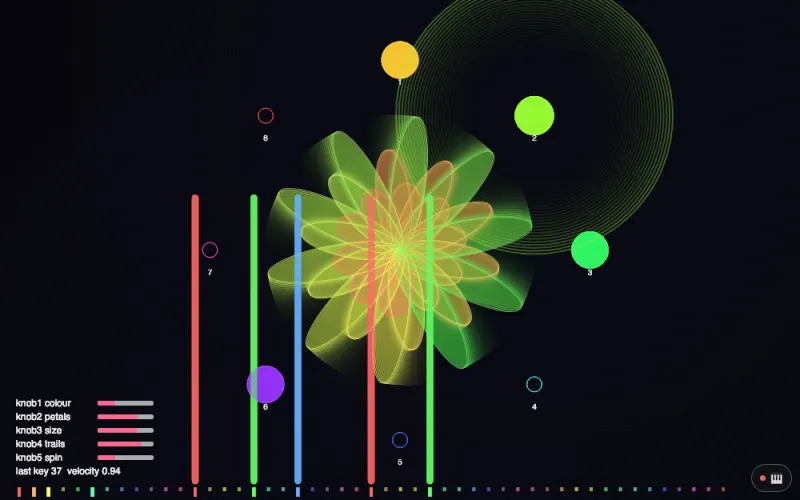
15
p5.js 一行指令
演奏方式 MIDI 控制器 · 螢幕上的控制器 · 手機
一份普通的 p5 草圖，第一行載入
oav-p5.js，就能用 MIDI 控制器、螢幕上的控制器或手機彈。① 第一次打開
-
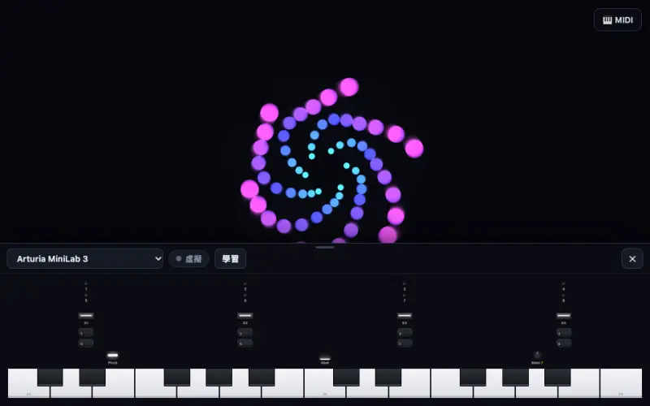
-
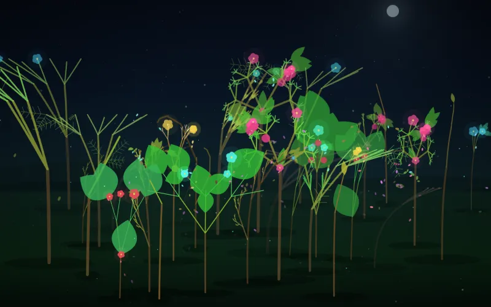
-
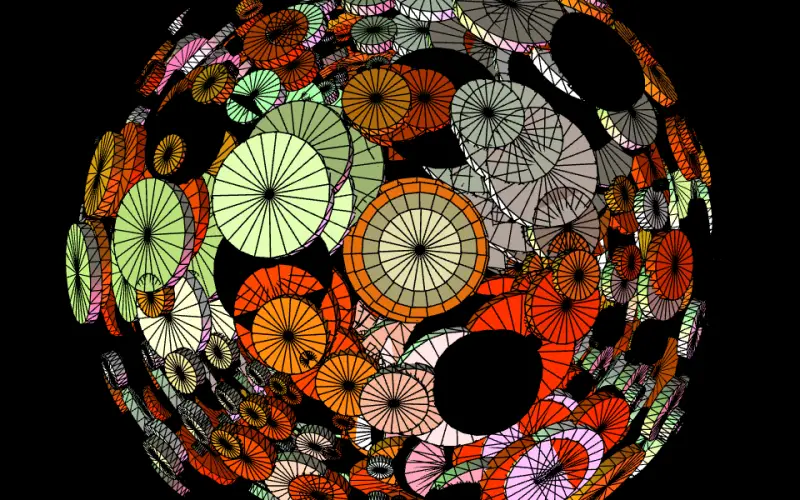
06
Cylinder Earth
吳哲宇，200412 3D Cylinder Earth，2020
演奏方式 麥克風 · 鼓機
2020 年用聲音控制的 WebGL 作品。低頻推動柱體，高頻讓旋轉閃爍，大鼓一下就換一組配色。
② 什麼都能當樂器
-
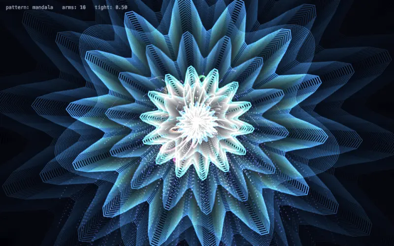
-
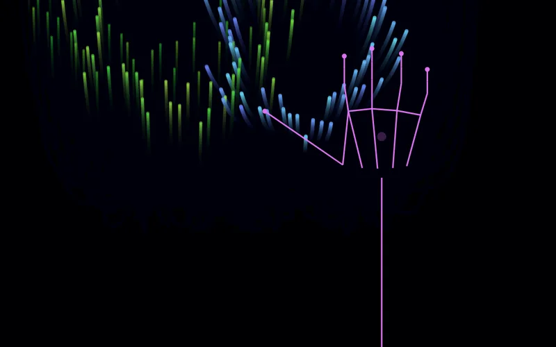
-
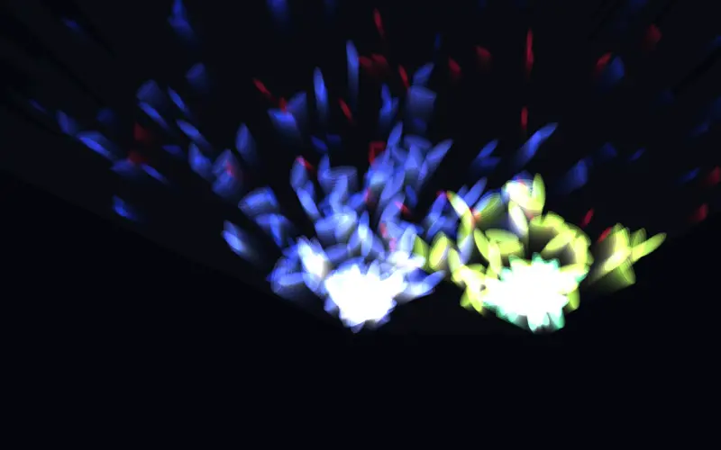
-
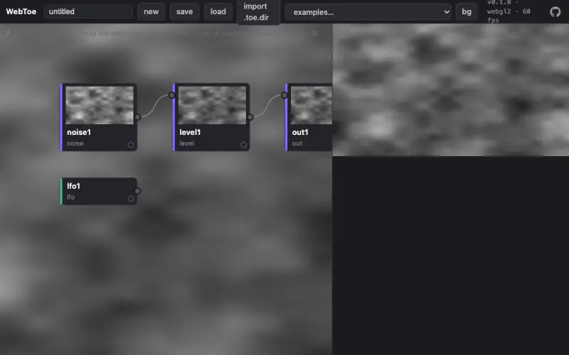
-
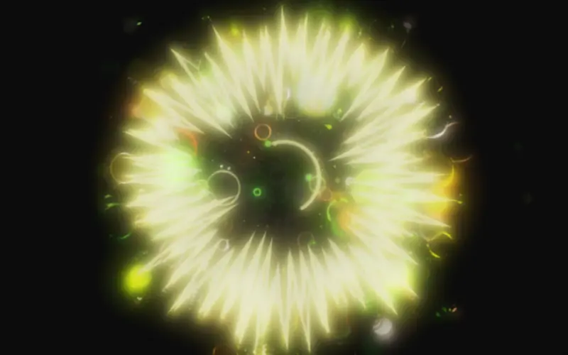
05
Prebiotic Flake
吳哲宇，230616 Prebiotic Flake，2023
演奏方式 螢幕鋼琴 · 模擬演奏者 · 聲音
2023 年的一件 MIDI 每日創作，搬進框架重新演奏。繪圖程式碼保持原樣，雪花現在透過 Tone.js 發出聲音。
③ 接上別的畫面引擎
-
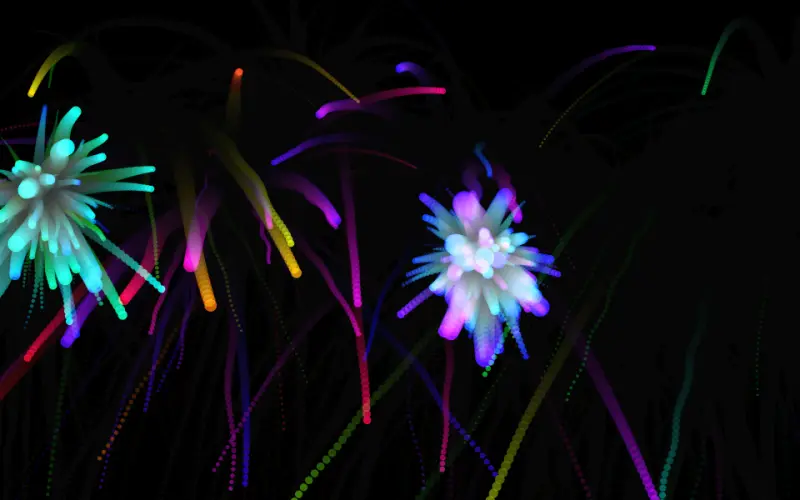
-
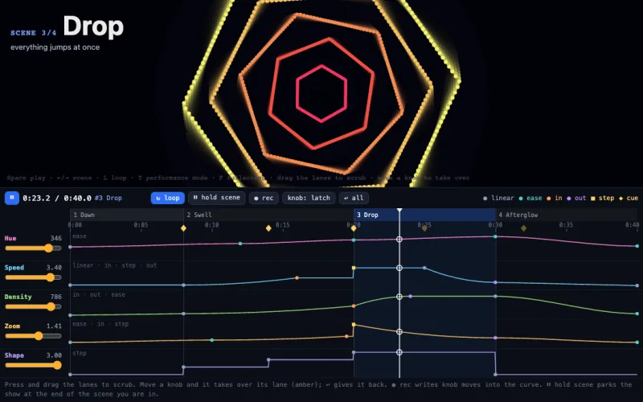
-
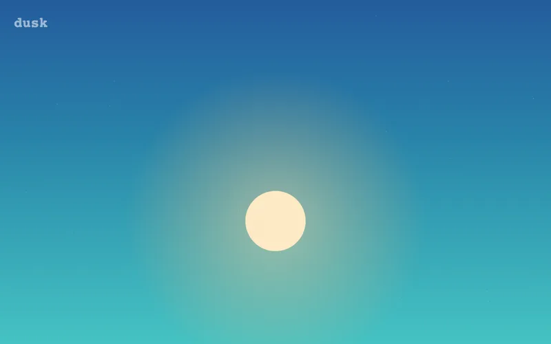
-
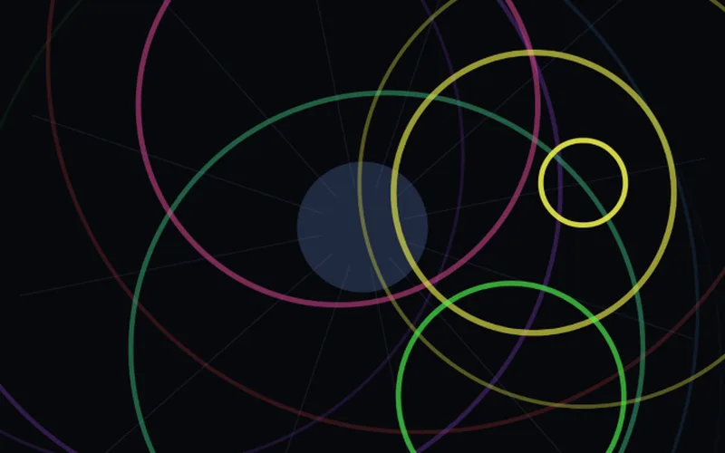
-
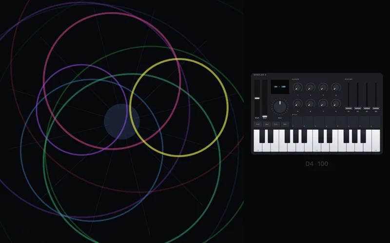
05 到 07 是吳哲宇 2020 到 2023 年的作品，在這裡當作示範。框架採 MIT 授權，作品的著作權仍屬藝術家，保留一切權利。
姊妹專案
WebToe
背後的引擎
做即時影像的節點式資料流引擎。在瀏覽器裡就能像用 TouchDesigner 那樣接運算子，跑在 WebGL2 或 WebGPU 上，沒有執行期相依套件，還能打開真的 TouchDesigner 專案。透過 @openav/world-webtoe，一張網路就能變成可以演奏的世界。WebToe 負責引擎，open-audiovisual 負責演出。
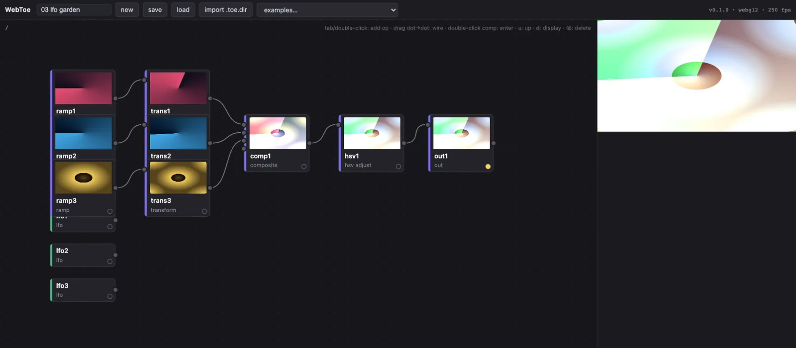
04 · 開始
一分鐘跑起來
不用安裝、不用建置、沒有相依套件。clone 下來，跑一個檔案，打開瀏覽器。要用 Web MIDI 和鏡頭，請用 Chrome 或 Edge。
git clone https://github.com/frank890417/open-audiovisual.git
cd open-audiovisual
node serve.js # → http://localhost:8080接著打開 http://localhost:8080/examples/01-hello-particles/，讀它的 main.js。
node packages/monitor/server.js # backstage monitor (:7457)
node packages/osc/bridges/osc-bridge.js # OSC → UDP bridge需要的話，各開一個終端機：後台監看伺服器，以及把 OSC 送到 UDP 的橋接。
你只需要寫一個世界
宣告作品能被什麼演奏（參數），對事件做反應，然後畫出來。交給 createShow()，其他部分一起到位：鋼琴、映射、時間軸、控台、聲音、後台。旁邊放一個帶 import map 的 index.html，照範例 01 的寫法。
import { createShow } from '@openav/show';
import { createCanvas } from '@openav/stage';
const pulse = {
name: 'pulse',
// what the piece is performed WITH: sliders, knobs, hands, the timeline
params: [{ key: 'size', min: 10, max: 200, def: 40 }],
init({ container, signals }) {
this.view = createCanvas(container);
this.r = 0;
// a struck note is an event, so it may come straight from a signal
signals.on('midi/note/on', ({ vel }) => { this.r = 120 * vel; });
},
update(dt, state) { this.r = Math.max(0, this.r - dt * 90); this.size = state.size; },
render() {
const { ctx } = this.view, { w, h } = this.view.fit();
ctx.fillStyle = '#000'; ctx.fillRect(0, 0, w, h);
ctx.fillStyle = '#fff';
ctx.beginPath(); ctx.arc(w / 2, h / 2, this.size + this.r, 0, 7); ctx.fill();
},
dispose() { this.view.dispose(); },
};
await createShow({ world: pulse, modules: { sound: true } });二十四個套件，依層分類
全部是原生 ES module。用 import map 引入需要的套件，或交給 createShow() 組裝。
輸入
@openav/midiWeb MIDI 輸入與輸出，支援多台裝置與螢幕上的控制器@openav/audio麥克風分析：音量、頻段、亮度、起音、鼓點@openav/chord為演出設計的和弦偵測：協和度、三和弦、音堆@openav/pose用鏡頭追蹤身體與手的 21 個點，全部在本機運算@openav/keys螢幕鋼琴、電腦鍵盤演奏，以及模擬演奏者@openav/drums合成鼓組與步進音序器，發出和音訊分析同樣形狀的訊號@openav/leap透過本機的小橋接，把 Leap Motion 的手變成 21 點手部訊號
映射
@openav/mapping訊號到參數的路由：曲線、平滑、多對多、learn
世界
@openav/stage世界的外殼：管生命週期和參數，不限定繪圖方式@openav/world-webtoe把 WebToe 節點網路當成世界來演奏
輸出
@openav/sound頁面裡的樂器（Salamander 鋼琴、敲擊琴、弦樂、風琴、合成器音色），加一個檔案就能放進自己的聲音@openav/osc透過一支小小的 Node 橋接，把 OSC 從瀏覽器送到 UDP@openav/record演出影片：作品疊在鏡頭畫面上、連同作品自己的聲音錄成一個檔；MIDI 演奏可錄下再重播@openav/fab做得出來嗎？對任何網格做 3D 列印檢查（水密、懸空、最薄壁、重量），匯出 STL、OBJ、GLB、STEP
時間軸、控台、監看
@openav/timeline參數自動化、場景與 cue：整場演出的時鐘@openav/score把演出寫成段落長度：版本、cue、hold，還有模組壞掉時讓演出不中斷的導演@openav/console導演控台與演出模式@openav/monitor網路裡任何裝置都能看的後台畫面
手機與平板
@openav/relay零相依的房間中繼，讓手機和 iPad 連進來@openav/surface類似 TouchOSC 的控制元件，以及 autoSurface(params)@openav/remote手機與 iPad 端的 app：感測器、琴鍵、控制面板
核心與代理
@openav/coreSignals、Params、Loop：每一層共用的語言@openav/showcreateShow()：一次呼叫組好整個外殼@openav/mcp給程式代理用的 MCP 伺服器：列出、閱讀、建立、檢查
文件
常見問題
大家常問的
open-audiovisual 是什麼？
open-audiovisual 是零建置的 JavaScript 框架：把 MIDI 控制器、麥克風、手勢與手機變成訊號，驅動瀏覽器裡的 p5.js、WebGL 或 WebToe 世界，用於現場影音表演。MIT 授權。
可以用 MIDI 控制器玩 p5.js 草圖嗎？
任何一份 p5.js 草圖（OpenProcessing、p5 編輯器、你自己的網頁）在最前面加一行，就能用 MIDI 控制器、螢幕上的控制器或手機來彈。
document.head.prepend(Object.assign(document.createElement('script'), { src: 'https://openaudiovisual.com/p5/oav-p5.js' }));p5 1.x、2.x 的全域模式都能用，setup() 裡不用呼叫任何東西。
哪些瀏覽器支援 MIDI？
Chrome 和 Edge 有。演出請用它們。
Safari 和 iPad 沒有 Web MIDI，螢幕上的控制器和手機照樣能用。
鏡頭和麥克風只在安全環境（secure context）裡能用：http://localhost 或 https://。
支援哪些 MIDI 控制器？每台的 CC 對照表在哪？
open-audiovisual 把 MIDI 控制器寫成資料：每台裝置一個 JSON 檔，記下面板配置、每個控制項送出的 MIDI 訊息、LED 回饋、怎麼認出它的埠，以及每個數字出自哪一份文件。
同一個檔案可以變成螢幕上能彈的控制器，接上實體裝置時跟著動，也能放進任何網頁。
可以把控制器嵌進我自己的網站嗎？
<script type="module" src="https://openaudiovisual.com/packages/midi/element.js"></script>
<oav-controller profile="akai-lpd8" readout></oav-controller>這樣就接好了。沒有 Web MIDI 的瀏覽器（Safari、iPad）一樣能彈、一樣送出事件，只有硬體和 MIDI 輸出這兩項會顯示無法使用。
AI 代理可以幫我做世界嗎？
世界就是程式碼，程式代理（coding agent）很會寫程式。人用文字描述一場表演，代理寫出世界，框架把演出跑起來。
repo 內附一個零相依、走 stdio 的 MCP 伺服器。
05 · 給 AI 代理
給 AI 代理
世界就是程式碼，程式代理（coding agent）很會寫程式。人用文字描述一場表演，代理寫出世界，框架把演出跑起來。
把這段貼給 Claude Code、Cursor 或任何程式代理
Clone https://github.com/frank890417/open-audiovisual，先讀 AGENTS.md。
執行 `node serve.js`，打開 http://localhost:8080/examples/01-hello-particles/，看最小的完整演出長什麼樣子。
把 01-hello-particles 複製成 examples/16-<名稱>/（或呼叫 openav MCP 的 scaffold_world 工具），在它的 main.js 為這件作品寫一個 World：
<描述這場表演，例如「一個遇到和諧和弦就綻放的水母世界」>
AGENTS.md 的規則：連續控制一律走參數，由 mapper 把訊號接過去。不要為了讓某個範例好看去改 packages/*。
完成的條件：npm test 通過，新範例載入時主控台零錯誤。接上 MCP 伺服器
repo 內附一個零相依、走 stdio 的 MCP 伺服器。在 repo 裡打開 Claude Code，會自動從 .mcp.json 讀到它。其他客戶端，把路徑指到這個檔案：
{
"mcpServers": {
"openav": {
"command": "node",
"args": ["/path/to/open-audiovisual/packages/mcp/server.js"]
}
}
}工具
list_examples- 有哪些作品，每件附一行摘要
read_doc- 架構、寫一個世界、訊號、演出控制、代理約定
scaffold_world- 拿一個範例當底，建立新的編號範例
run_checks- 跑測試，和 CI 是同一道關卡
list_controllers- 所有 MIDI 控制器設定檔，附控制項組成與未確認數量
read_profile- 讀一台完整的設定檔，附好讀的 MIDI 對照
validate_profile- 檢查設定檔 JSON，抓出和內建機型的衝突
scaffold_profile- 為新控制器產一份合法骨架，每個數字都標未確認
給機器讀的
- /llms.txt這是什麼、核心概念、所有文件與範例，llmstxt.org 格式
- /llms-full.txtREADME、AGENTS.md 和所有文件合成一個檔
- AGENTS.md每一層的介面約定，以及代理不能打破的兩條規則
- /create-worldClaude Code 技能：從一段描述建立一個世界
application/ld+json這一頁帶有 SoftwareSourceCode 的 JSON-LD- /這一頁的英文版
06 · 來歷
從一場演出裡抽出來
open-audiovisual 的核心來自《The Last Input 終局之前》（吳哲宇，2026），IRCAM 聲鬥陣 × C-LAB 在台北的 49.4 聲道空間聲響演出，演奏者用鋼琴餵養一個活著的數位世界。時間軸、和弦語意、多對多的 MIDI learn、OSC 批次傳送，都先撐過一整場十四個場景的演出，才整理成這裡的通用框架。從那之後的規則：框架只長真實演出要求過的功能。
映射層的想法，承接 libmapper 對訊號命名空間的研究。姊妹專案 WebToe 是節點式的資料流引擎，可以匯入 TouchDesigner 專案。WebToe 負責引擎，open-audiovisual 負責演出。
Hydra 給你即興，cables 給你平台，Tone 給你聲音。open-audiovisual 給你一場演出。
接下來，摘自路線圖
- 錄下一場演出完整的訊號流，再播給任何一個世界
- 發布 npm 套件，用這套框架本身做文件網站
- WebGPU 世界轉接，給粒子與群體代理類的世界
- NDI 閘道，讓瀏覽器的畫面進入專業影像流程
- 多台電腦透過 WebRTC 共用同一個訊號空間
- 訂閱訊號、和人一起演奏的 AI 演奏者